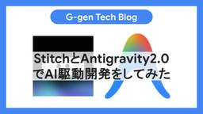

G-gen Tech Blog
https://blog.g-gen.co.jp/
Google Cloudの情報発信を行う技術ブログ
フィード

StitchとAntigravity2.0でAI駆動開発をしてみた
G-gen Tech Blog
G-gen の高宮です。当記事では、AI 駆動フロントエンドデザインツール Stitch と、AI 駆動統合開発環境 Google Antigravity 2.0 を組み合わせた、AI 駆動開発について紹介します。 はじめに AI 駆動開発（AI-Driven Development）とは Stitch とは Google Antigravity とは 環境準備 Stitch でのフロントエンドデザイン Antigravity 2.0 での開発 Stitch との連携 アプリケーションコードの開発 Google Cloud 環境へのデプロイ 実践と応用 はじめに AI 駆動開発（AI-Driv…
2日前

Sensitive Data Protectionの匿名化（de-identification）を解説
G-gen Tech Blog
G-gen の佐々木です。当記事では、Google Cloud の Sensitive Data Protection（旧称 Cloud Data Loss Prevention）による機密データの匿名化（de-identification）について解説します。 概要 Sensitive Data Protection とは 匿名化（de-identification）とは 匿名化と個人情報保護法 匿名化の基本 匿名化の概要 infoType infoType 変換とレコード変換 対象データの種類 処理ロケーションとデータレジデンシー 匿名化の変換方式 変換方式の一覧 置換と秘匿化 マスキング…
3日前

Gemini Enterprise Agent PlatformでAPIキーの取得が失敗する原因と対処法
G-gen Tech Blog
G-gen の菊池です。Gemini Enterprise Agent Platform（旧称 Vertex AI）の画面で「API キーの取得」を行う際に発生するエラーの原因と、その推奨される対処法について解説します。 事象 原因 原因となる組織ポリシー サービスアカウントにバインドされた API キーとは API キーは何のために必要なのか デフォルトで作成が制限されている理由 対処の手法 2つの対処法 組織ポリシーを修正して API キーを発行する（非推奨） アプリケーションのデフォルト認証情報（ADC）を使用する（推奨） 対処の手順（ADC） 前提条件の確認 Google Cloud …
4日前

Agent Registryを徹底解説！
G-gen Tech Blog
G-gen の杉村です。当記事では、Google Cloud の Agent Registry について徹底解説します。AI エージェントや MCP サーバーの統合管理・ディスカバリを担う当サービスの機能やアーキテクチャを解説します。 概要 Agent Registry とは メリット 構成イメージ データモデル 概要 エージェント MCP サーバー エンドポイント コンポーネントの登録 概要 自動登録 手動登録 コンポーネントの検索と取得 キーワード検索 プレフィクスで検索 MCP サーバーによる検索 バインディング 管理戦略 プロジェクトレベルのアーキテクチャ 組織レベルのアーキテクチャ …
8日前

BigQuery Conversational Analyticsの回答精度向上を徹底解説
G-gen Tech Blog
G-gen の福井です。自然言語でデータを分析できる BigQuery Conversational Analytics について、回答精度を高める手段を徹底解説します。 はじめに 当記事の概要 BigQuery Conversational Analytics とは データエージェントと回答精度 回答精度向上の考え方 回答精度を決めるレイヤー構造 Google が推奨する積み上げの順序 土台となるデータとナレッジソース スキーマ設計とデータ整形 ナレッジソースの絞り込み 構造化コンテキストの整備 テーブルと列の説明 用語集の使用 検証済みクエリ 検証済みクエリの働き パラメータ化検証済みクエ…
9日前
AIエージェントにGoogle Cloudのログ調査と解決策の提案をさせてみた
G-gen Tech Blog
G-gen の min です。当記事では、Cloud Logging リモート MCP サーバーと Developer Knowledge MCP サーバーを組み合わせることで、障害発生時のログ調査と解決策の提案を AI エージェントに行わせる検証をします。 はじめに AI エージェントによるエラー調査 検証の手順 関連記事 Cloud Shell の起動と基本設定 Cloud Shell の起動 プロジェクト ID の設定 ADC の設定 Google Cloud リソースの準備 API の有効化 API キーの作成と制限 IAM ロールの付与 Gemini CLI への MCP サーバー設…
10日前
プロンプトインジェクションの解説とGoogle Cloudによる対策
G-gen Tech Blog
G-gen の本間です。当記事では、大規模言語モデル（LLM）や AI ツールに対するプロンプトインジェクション攻撃について解説します。また、Google Cloud を使った対策方法を紹介します。 プロンプトインジェクションについて プロンプトインジェクションとは 従来のサイバー攻撃との違い プロンプトインジェクションの種類 直接的プロンプトインジェクション 間接的プロンプトインジェクション AI エージェントの台頭とリスクの増加 AI エージェントの台頭 AI エージェントへの脅威 プロンプトインジェクション対策 多層防御 集中管理 AI プラットフォームの採用 Google Cloud …
11日前
エージェントが生成したコードをCloud Runのサンドボックスで実行する
G-gen Tech Blog
G-gen の佐々木です。当記事では、Agent Development Kit（以下 ADK と記載）で開発した AI エージェントを Cloud Run にデプロイし、Cloud Run のサンドボックス機能による Code Execution（LLM が生成したコードの安全な実行）を試します。 構成 当記事で使用するもの Cloud Run とは Cloud Run のサンドボックスとは サンドボックスの概要 sandbox コマンドラインツール 実行結果の取得とファイルの受け渡し Agent Development Kit（ADK）とは エージェントの開発 ディレクトリ構成 uv プロ…
12日前
Agent Gatewayを徹底解説！
G-gen Tech Blog
G-gen の杉村です。当記事では、Google Cloud の AI エージェント向けネットワークセキュリティ機能である Agent Gateway について解説し、仕様の把握や設計時の考慮事項の検討に役立つ情報を提供します。 概要 Agent Gateway とは アーキテクチャ メリット 通信制御 概要 通信制御の対象 Identity-Aware Proxy（IAP） Model Armor セマンティックガバナンスポリシー Service Extensions デプロイと運用 エージェントへのルール適用（Gemini Enterprise app） エージェントへのルール適用（Age…
15日前
Google SecOpsのPlaybooksでアラート対応を自動化する（GitHub編）
G-gen Tech Blog
G-gen の武井です。当記事では、Google SecOps で検知したアラートの是正対応を Playbooks で自動化する方法を解説します。 はじめに Google SecOps とは Playbooks（ハンドブック）とは 検証の流れ カスタムルールの設定 インテグレーションの設定 インテグレーションとは カスタムインテグレーションとは カスタムインテグレーションの作成 カスタムアクションの作成 インスタンス設定 Playbooks の設定 Playbooks の構成 トリガー コンディション アクションの設定 動作確認 はじめに Google SecOps とは Google Sec…
17日前
Google SecOpsにGitHubの監査ログを取り込む
G-gen Tech Blog
G-gen の武井です。当記事では、Google が提供する SIEM / SOAR 製品である Google SecOps に、GitHub の監査ログを取り込む方法について解説します。 はじめに Google SecOps とは データフィードとは 設定の流れ Google Cloud の設定 サービスアカウント Cloud Storage バケット IAM Policy GitHub の設定 監査ログのストリーミング Google SecOps の設定 データフィード 動作確認 応用 はじめに Google SecOps とは Google Security Operations（以下 …
18日前
Cloud Storageの非公開バケットで静的ウェブサイトをホスティングする
G-gen Tech Blog
G-gen の高宮です。当記事では、Cloud Storage バケットをバックエンドとして、安全に静的ウェブサイトをホスティングする手順を解説します。 はじめに Cloud Storage とは 静的 Web サイトホスティングの手法 各手法の比較 事前準備 バックエンドバケットへのサービスアカウント認証 手順の概要 Cloud Storage バケットの作成 バックエンドバケットの作成 バケットへの権限付与 ロードバランサーの作成 プライベートオリジンの認証 手順の概要 サービスアカウントの作成 HMAC キーの作成 Cloud Storage バケットの作成 バケットへの権限付与 NEG…
19日前
Compute EngineでWindows Serverを起動・接続する手順を解説
G-gen Tech Blog
G-gen の今村です。当記事では、Google Cloud（旧称 GCP）の仮想マシンサービスである Compute Engine で Windows Server VM を起動し、リモートデスクトップでログインするまでの手順について解説します。 はじめに VM の起動 新規 VM の設定画面へ遷移 VM の設定 概要 マシンの構成 OS とストレージ データの保護 ネットワーキング オブザーバビリティ セキュリティ 詳細 設定を確認して作成 管理者アカウントとパスワード 初期パスワードの発行 初期パスワードの変更 リモートデスクトップ接続の設定 ファイアウォールルールの構成 RDP での接…
22日前
2026年6月のイチオシGoogle Cloud・Google Workspaceアップデート
G-gen Tech Blog
G-gen の杉村です。2026年6月に発表された、Google Cloud や Google Workspace のイチオシアップデートをまとめてご紹介します。記載は全て、記事公開当時のものですのでご留意ください。 はじめに Google Cloud のアップデート BigQuery Editions の最小課金時間が1秒になる fluid scaling が一般公開（GA） Cloud Interconnect のシングルリージョン構成で 99.99% SLA BigQuery の生成 AI 関数で上限（クォータ）が任意に設定できるように 利用料の BigQuery エクスポートで FOC…
24日前
BigQueryのスケジュールドクエリを解説
G-gen Tech Blog
G-gen の本間です。BigQuery の自動化機能であるスケジュールドクエリ（Scheduled queries）を解説します。 概要 スケジュールドクエリとは ユースケース 料金 主な機能と特徴 スケジュール設定 クエリ結果の書き込み 書き込み方式の概要 DML を使用した書き込み 宛先テーブルを指定した書き込み ランタイムパラメータの利用 権限と IAM ロール クエリの実行主体 スケジュール作成者に必要な権限 クエリ実行主体に必要な権限 注意点と制限事項 毎正時（00分）指定における重複実行のリスク 実行遅延の可能性 概要 スケジュールドクエリとは スケジュールドクエリ（Schedu…
1ヶ月前
Google Workspace Studioで議事録作成からタスク登録までを自動化してみた
G-gen Tech Blog
G-gen の福井です。Google Workspace Studio のループ機能を使用して、Google Meet の文字起こしから議事録を作成し、会議で決まったタスクを Google Tasks へ自動登録するフローを作成する手順を紹介します。 はじめに 当記事の概要 Google Workspace Studio とは ループ機能（Repeat for each）とは 作成するフロー 処理の全体像 注意事項 フローの作成手順 開始条件 : フォルダへのアイテム追加 議事録の作成 議事録ファイル名の生成 Google ドキュメントへの保存 タスク一覧の抽出 ループによるタスク登録 動作確…
1ヶ月前
Google Workspace Studioでリストのループ処理機能を使ってみた
G-gen Tech Blog
G-gen の西田です。ノーコードで Google Workspace のタスクを自動化できる Google Workspace Studio に導入された、リストデータを繰り返し処理できるループ処理機能について解説します。 はじめに Google Workspace Studio とは ループ処理機能の概要 検証シナリオ 設定手順 動作確認 はじめに Google Workspace Studio とは Google Workspace Studio とは、プログラミングを行うことなく、Google Workspace の各アプリケーションや Gemini を組み合わせた自動化フローを作成で…
1ヶ月前
Google Cloudのセキュリティ対策を5つの観点で徹底整理
G-gen Tech Blog
G-gen の武井です。当記事では、Google Cloud のセキュリティ対策を観点ごとに整理し、網羅的にまとめます。 はじめに 全体像 証跡管理 概要 関連サービス・機能 Cloud Audit Logs Cloud Logging Cloud Asset Inventory 予防的統制（統制の基盤を整備する） 概要 関連サービス・機能 組織（Organization） 階層構造 組織を使わないリスク 予防的統制（ID・認証基盤を整備する） 概要 関連サービス・機能 Google Workspace / Cloud Identity MFA / パスキー Workforce Identit…
1ヶ月前
LookerのGit連携とバージョン管理
G-gen Tech Blog
株式会社 G-gen の菊池です。Looker では LookML （Looker Modeling Language）を用いてデータモデルを定義しますが、これらのコードはすべて Git リポジトリで管理されます。当記事では、Git 連携の仕組みや品質管理設定について解説します。 Looker におけるバージョン管理の概要 LookML プロジェクトと Git リポジトリの連携 開発モードと本番環境の分離 IDE 内での Git 操作 Git リポジトリとの接続方法 概要 HTTPS を使用した接続 SSH を使用した接続 ベア Git リポジトリ デフォルトのワークフロー 概要 開発ブランチ…
1ヶ月前
データサイエンスエージェント（Google Cloud）とClaude Codeを比較してみた
G-gen Tech Blog
G-gen のバロキです。当記事では、Anthropic の Claude Code と Google Cloud のデータサイエンスエージェントという 2 つの AI ツールに、同一のデータセットと指示を与えて比較しました。自動生成されるデータ分析ノートブックに、どのような違いが生まれるかを検証しました。 概要 はじめに データサイエンスエージェントとは Claude Code とは 検証の前提条件 使用したデータセット 投入したプロンプト 評価の観点 生成されたノートブックの全体像 データサイエンスエージェントの特徴 Claude Code の特徴 観点別の比較 コードの量と構造 可視化の…
1ヶ月前
Googleが公開した公式スキルリポジトリgoogle/skillsを解説
G-gen Tech Blog
G-gen の福井です。当記事では、Google が公開している公式 Agent Skills リポジトリ google/skills について、リポジトリの概要から、収録されているスキルの内容を解説します。 概要 google/skills リポジトリとは 公開背景 ライセンス 使い方 製品別スキル gemini-api alloydb-basics bigquery-basics cloud-run-basics cloud-sql-basics firebase-basics gke-basics Well-Architected Framework 柱別スキル google-cloud…
1ヶ月前
Cloud SQLのインデックスアドバイザーを解説
G-gen Tech Blog
G-gen の今村です。当記事では、Cloud SQL で提供されているパフォーマンス最適化機能の1つであるインデックスアドバイザーについて解説します。 概要 インデックスアドバイザーとは 仕組み 料金と要件 料金 対象エディションと要件 有効化の手順 推奨事項の確認 推薦インデックスの確認方法 画面に表示される評価データの内容 Gemini による支援 推奨事項の適用 概要 インデックスアドバイザーとは Cloud SQL のインデックスアドバイザー機能は、Cloud SQL で実行されたクエリを自動的に分析し、パフォーマンス向上につながる最適なインデックスを提案する機能です。当機能は Cl…
1ヶ月前
Google SecOpsのAIエージェントでアラートの一次対応を自動化する
G-gen Tech Blog
G-gen の三浦です。当記事では、Google SecOps の AI エージェントである トリアージと調査エージェント（TIN）と、それを Playbook に組み込む エージェントの自動化（Agentic Automation）を使い、アラートの一次対応を自動化した結果を紹介します。 概要 Google SecOps とは トリアージと調査エージェント（TIN）とは TIN の無償トライアル エージェントの自動化（Agentic Automation）とは 注意点 検証の手順 TIN の有効化 アラートの確認 概要 TIN なし（有効化前のアラート） TIN あり（有効化後のアラート） …
2ヶ月前
Google CloudのAgent Identityを解説
G-gen Tech Blog
G-gen の佐々木です。当記事では、Google Cloud にデプロイした AI エージェントに固有のアイデンティティを付与する Agent Identity の仕組みと、Agent Identity を用いた認証方式について解説します。 概要 Agent Identity とは サービスアカウントとの違い Agent Identity の基本 SPIFFE 形式の識別子 エージェント認証情報 セキュリティとガバナンス 認証方式 サポートされる認証方式 認証マネージャー 認証プロバイダー Agent Identity の設定例 概要 Agent Identity とは Agent Iden…
2ヶ月前
Google WorkspaceのAI機能に関するセキュリティガイド
G-gen Tech Blog
G-gen の川村です。Google Workspace の生成 AI ツールである Gemini アプリや NotebookLM を安全に運用するためのセキュリティ設定や、管理者が注意すべき点について解説します。 はじめに 概要 付属の生成 AI ツール 生成 AI ツールの外部共有機能 エンタープライズグレードのデータ保護 機能へのアクセス制御 生成 AI サービスのアクセス制御 サイドパネルのアクセス制御 CAA によるゼロトラスト制御 シャドー IT 対策と端末管理 シークレットウィンドウの使用禁止 ウェブプロキシによる個人アカウントの使用禁止 GCPW のエンドポイント保護 Chro…
2ヶ月前
Gemini CLIからAntigravity CLIへ移行してCloud Runアプリを開発してみた
G-gen Tech Blog
G-gen の三浦です。当記事では、Gemini CLI から Antigravity CLI への移行を検証し、移行後に簡単な Web アプリを作成して Cloud Run へデプロイした結果を紹介します。 前提知識 Google Antigravity とは Antigravity CLI とは Gemini CLI の提供終了と Antigravity CLI への移行 概要 Antigravity CLI と Gemini CLI の違い 移行作業の対象 検証手順 移行検証用の設定 概要 Agent Skills MCP サーバー Extensions Antigravity CLI …
2ヶ月前
2026年5月のイチオシGoogle Cloud・Google Workspaceアップデート
G-gen Tech Blog
G-gen の杉村です。2026年5月に発表された、Google Cloud や Google Workspace のイチオシアップデートをまとめてご紹介します。記載は全て、記事公開当時のものですのでご留意ください。 はじめに Google I/O 2026 が開催 Google Cloud のアップデート SCC で Compliance Manager がプロジェクト単位で有効化可能に Agent Search で agentic retrieval が Allowlist 付き一般公開 BigQuery の reservation groups が一般公開（GA） Google Clou…
2ヶ月前
Cloud MonitoringのMCPサーバーを使ってインシデント対処を自動化してみた
G-gen Tech Blog
G-gen の勝島です。当記事では、Gemini Enterprise Agent Platform と Cloud Monitoring の MCP サーバーを組み合わせて、エラーログの検知から AI による原因分析、Slack 通知までを自動化します。 はじめに Gemini Enterprise Agent Platform とは MCP（Model Context Protocol）とは 当記事について 背景と構成 本構成の狙い システムの構成 環境構築 環境変数の設定 API の有効化 ログルーティングの設定 サービスアカウントと IAM ロール アプリケーションの実装 ディレクトリ…
2ヶ月前
Agent Skillsを徹底解説！
G-gen Tech Blog
G-gen の福井です。当記事では、AI エージェントツールに専門知識やワークフローを追加するためのオープンフォーマットである Agent Skills について、概念や動作の仕組み、スキルの構造、使い方などを解説します。 概要 Agent Skills とは Skills が可能にすること Skills の実体 Agent Skills の仕組み 基本的な動作 コンテキスト肥大化の防止 Skills と MCP の関係 Skills の構造 ディレクトリ構成 SKILL.md の中身 使い方 対応ツール Skills ファイルの配置場所 インストール Gemini CLI からスキルを呼び出…
2ヶ月前
Managed Agents API on Agent Platformを解説
G-gen Tech Blog
G-gen の佐々木です。当記事では、単一の API 呼び出しでマネージドな自律エージェントを構築・実行できるサービスである Managed Agents API on Agent Platform について解説します。 概要 Agent Platform とは Managed Agents API on Agent Platform とは プレビュー段階での注意点 他のエージェント構築手段との比較 Managed Agents API の基本 2つの API ツールの利用 料金 サンドボックス環境について プリインストール済ソフトウェアと組み込みツール ファイルシステムと永続化 スキルのマウ…
2ヶ月前